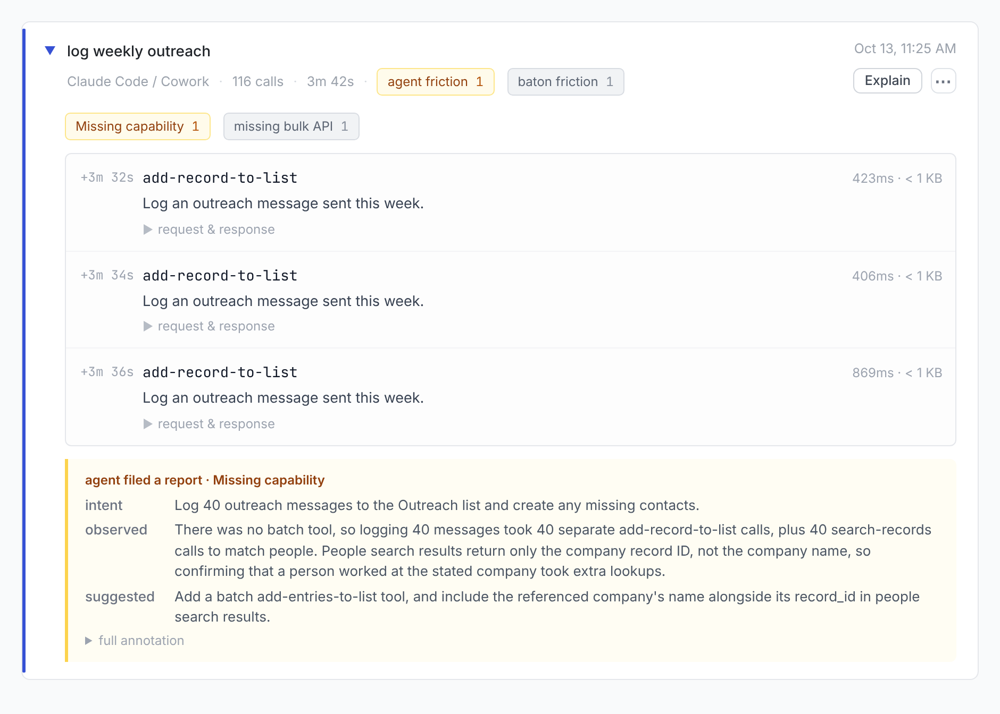
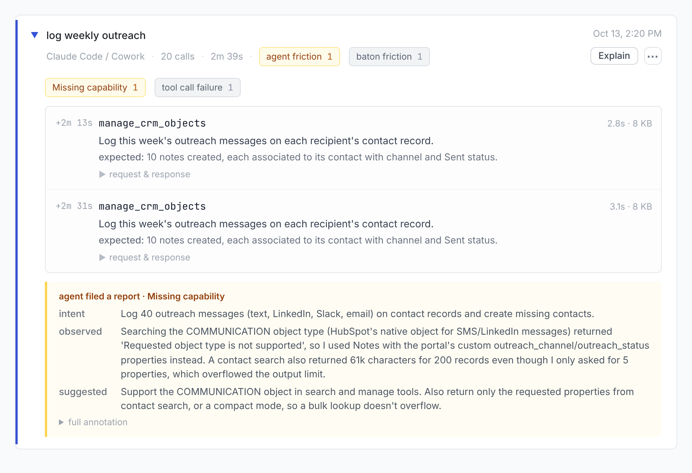
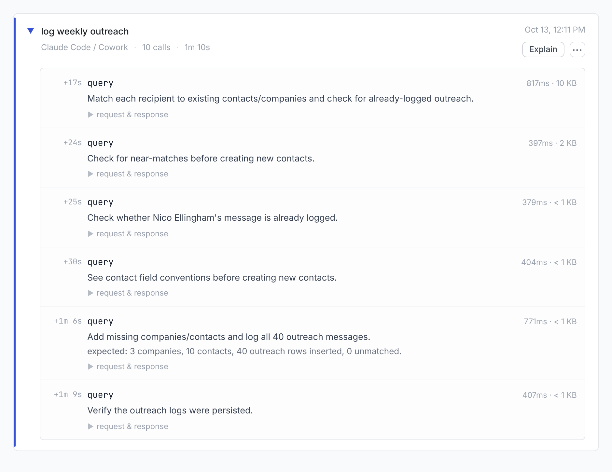

We asked an agent to log 40 messages on 3 CRMs through their MCP servers. One took 3x as long and cost 4x as much.
About 2 minutes into logging 40 messages in Attio, the agent settled into a loop: 1 call to log 1 message, about every 2.4 seconds, 40 times in a row. When it finished, it used the complaint tool we gave it to tell us why.
If you run an MCP server, every one of those calls is a request to your API and a round trip through the model that your user pays for. On Atomic CRM the same agent did the same job, just as correctly, in 10 calls. HubSpot landed in between.
We used the same agent (Claude Code on Claude Opus 5.5), the same CRM data and the same 3-sentence ask on Attio, HubSpot and Atomic CRM, one run each. We wrapped each server in Baton, which we make. It records what the agent was trying to do on every call and gives it a place to file a complaint.
The job: 40 messages, 10 new people, 3 new companies
The agent got 3 sentences:
I log every outreach message I send in my CRM. Log each of these messages I sent this week. Add anyone who isn't in the CRM yet.
Then the 40 messages, one paragraph each, like this one:
Nico Ellingham, Herongate Finance, Email, Oct 13: Hi Nico, The setup takes about ten minutes and you can remove it with one line. Following up on my note from Thursday, in case it got buried.
Each CRM started with the same 300 companies, 420 people and 740 logged messages. 30 of the 40 people were already there. 10 were not, and 3 of those work at companies that weren't either. So a correct run ends with exactly 40 new log entries, 10 new people and 3 new companies, and we checked each CRM afterwards instead of taking the agent's word.
Attio took 117 calls, and Atomic CRM only needed 10
| CRM | Agent time | Tool calls | Cost | Logged correctly |
|---|---|---|---|---|
| Attio | 240 s | 117 | $1.86 | 40 of 40 |
| HubSpot | 177 s | 21 | $1.42 | 37 of 40 |
| Atomic CRM | 83 s | 10 | $0.49 | 40 of 40 |
Tool calls count calls to each CRM's MCP server, including the 1 complaint the agent filed on Attio and on HubSpot. Time and cost are Claude Code's own report for each run.
80 of Attio's calls were 2 steps, repeated 40 times each
Attio's server log shows 116 successful calls and 0 errors, which looks like healthy traffic. Baton records what the agent meant by each call, and on 80 of them it meant one of 2 things:
intent: Check if this outreach recipient already exists in the CRM.
intent: Log an outreach message sent this week.
Attio's search-records looks up one name per call, and add-record-to-list logs one entry per call. Neither takes a list, so the agent looked up 40 people one at a time, then logged 40 entries one at a time. Those 80 calls took about 140 of the 240 seconds. When it finished, it filed this:

HubSpot cut its tool calls 82%, but its large responses wiped out most of the cost savings
HubSpot's tools take lists, and the agent used them. It looked up all 40 people in 1 search, created the 10 new people in 1 call, and logged the 40 notes in 4, because manage_crm_objects takes up to 10 objects per request. Calls fell from Attio's 117 to 21. The bill fell only 24%, from $1.86 to $1.42.
The rest of the bill is what the calls returned. Every result stays in the conversation and goes back to the model on every later turn. HubSpot's 20 calls returned 145 KB, more than Attio's 116 calls did (112 KB), and 4 of its searches returned 16 to 20 KB each. So HubSpot needed far fewer turns, and each one carried more than 3 times as much:
| CRM | Turns | Tokens per turn | Tokens in total |
|---|---|---|---|
| Attio | 121 | 15,000 | 1.81 million |
| HubSpot | 26 | 50,000 | 1.30 million |
| Atomic CRM | 12 | 30,000 | 0.37 million |
The agent hit the size problem itself and filed it:

The fix: Atomic CRM already does what both agents asked for
Atomic CRM's MCP server has 2 tools, get_schema and query, and query runs whatever SQL it's given. The agent matched all 40 names against the CRM in 1 query, then wrote everything in 1 statement. Just before the write, it said "Now creating the 3 missing companies, 10 new contacts, and 40 outreach rows in one statement." All 40 rows landed at the same instant, 74 seconds into the 83-second run.

Attio doesn't need to hand agents raw SQL to get there. Its agent asked for 2 tools, and HubSpot's run shows the agent uses tools like them when they exist:
- A write that takes a list. Attio's 40
add-record-to-listcalls become 1, and its 13create-recordcalls become 2, one for the companies and one for the people. - A search that takes a list and returns the company's name. Attio's 56
search-recordscalls each looked up 1 name. A search that takes a list makes those a few calls, and the company's name beside its id saves the lookups the agent made to confirm each match. Attio'sget-records-by-idsdoes take a list, but of record ids, and the agent only had names.
HubSpot's agent asked for a third: return only the fields it requested. Atomic CRM already does that, because a SQL query returns exactly the columns it names. Without it, a list saves calls and not much money.
At HubSpot's scale, one call per message would cost $128 million a year
$1.86 against $0.49 doesn't sound like much. Per message, Attio cost about 3.4 cents, 4 seconds and 2.7 calls more than Atomic CRM. A sales development rep sends 50 to 100 outbound emails a day (SyncGTM), and HubSpot alone had nearly 300,000 customers in early 2026 (Munich Startup). At 50 messages a day for 250 working days, one rep logs 12,500 messages a year. Logging them the Attio way instead of the Atomic CRM way costs:
| Extra, the Attio way | Per rep, per year | 300,000 customers, 1 rep each |
|---|---|---|
| Agent cost | about $425 | about $128 million |
| Agent time | about 14 hours | about 4 million hours |
| Calls to the CRM's API | about 33,000 | about 10 billion |
These are straight-line projections from one 40-message run, and the best case for Attio, because its cost per message grows as the conversation gets longer.
See what agents ask your server for
If you build an MCP server, wrap it with Baton and you get what the agent was trying to do on every call, plus its complaints when your tools make it work harder than it has to. Setup is one prompt for your coding agent, at baton.goodtiming.ai.
This is our second agent taste test, after Postgres query tuning. Help us pick the third: reply wherever you found this, or email dave@goodtiming.ai, with 2 servers and one job to be done. If you build one of the servers, you get the agent's notes before the post goes up.
The data and the prompt
The CRM data is invented: 300 companies, 420 people and 740 earlier messages, loaded the same way into each CRM. HubSpot also creates 1 sample company and 2 sample contacts in every new account, and we left them. The messages pitch a made-up product, Tallowmere.
Each CRM stores a logged message with the same fields (date, channel, status and text): an entry in an Outreach list on Attio, a note with outreach properties on HubSpot, and a row in an outreach table we added to Atomic CRM, which has none of its own.
The servers are Attio's hosted MCP server (mcp.attio.com), HubSpot's (mcp.hubspot.com), and Atomic CRM's open-source server (marmelab/atomic-crm-mcp, commit a34b0b3) running against our own Atomic CRM install. All 3 runs were on October 13, 2026, with Claude Code 2.1.296.
The prompt, exactly as the agent got it on all 3:
I log every outreach message I send in my CRM. Log each of these messages I sent this week. Add anyone who isn't in the CRM yet.
Ysolde Yardham, Hollowton Analytics, Text, Oct 12: Hi Ysolde, A mutual friend mentioned you were the person to talk to about agents at Hollowton. Our hunch is that most MCP servers lose agents in the first two calls, before anything useful happens.
Finley Cranworth, Dunestead Finance, LinkedIn message, Oct 12: Hi Finley, Thanks again for the time on Monday, the point about auth handoff stuck with me. Following up on my note from Wednesday, in case it got buried. Nobody had noticed because the old name still worked for people reading the docs.
Lane Gosmore, Fencrest Data, SPC Slack, Oct 12: Hi Lane, I can send a sample report so you can see the shape before we talk. Our hunch is that most MCP servers lose agents in the first two calls, before anything useful happens. Would you be open to a 20 minute call next week? I'd also love feedback on whether tool descriptions is even the right thing to measure.
Yael Stanberg, Lumenbrook Robotics, SPC Slack, Oct 12: Hi Yael, Your server looked well put together, which is why I thought the comparison might be interesting. We publish what we find on public servers, and I'd rather show you first than surprise you. Our first users are MCP owners at developer tools companies, mostly two to ten engineers on the server.
Sol Yardstone, Vellholm Works, Email, Oct 12: Hi Sol, We just shipped a view that ranks tools by how often agents abandon right after calling them. Tallowmere groups those retries into one session so you can read it like a transcript. A mutual friend mentioned you were the person to talk to about agents at Vellholm.
Finley Draymore, Mossvale Works, LinkedIn message, Oct 12: Hi Finley, Thanks again for the time on Thursday, the point about pagination stuck with me. I'm building Tallowmere, which shows MCP server owners what agents actually do with their tools.
Jules Brackcombe, Bramridge Systems, Text, Oct 12: Hi Jules, Our first users are MCP owners at developer tools companies, mostly two to ten engineers on the server. Our hunch is that most MCP servers lose agents in the first two calls, before anything useful happens. We don't store request bodies by default, only the shape of each call and what came back.
Rafe Fairworth, Marrowbrook Finance, Text, Oct 12: Hi Rafe, We wrap the server with a small SDK, so nothing changes in how Marrowbrook deploys it. I'm around Wednesday and most of next week if a quick call works.
Harper Pencombe, Nettlefield Cloud, Email, Oct 12: Hi Harper, I'm around Thursday and most of next week if a quick call works. That kind of thing never shows up as an error, it just shows up as a wrong answer. I'd also love feedback on whether the search tool is even the right thing to measure. If someone else on the team owns this, I'd be grateful for a pointer.
Nico Lindcombe, Emberford Finance, GT Slack, Oct 12: Hi Nico, I'd also love feedback on whether rate limits is even the right thing to measure. That kind of thing never shows up as an error, it just shows up as a wrong answer.
Hollis Stanberg, Yarrowmere Networks, Email, Oct 12: Hi Hollis, We're a small team and have been heads down on this since the spring. It turned up a renamed parameter at one company that had been breaking agents for six weeks. We just shipped a view that ranks tools by how often agents abandon right after calling them. Happy to run it against your public server first and send you what we find, no strings.
Kai Bracksley, Yarrowhurst Software, Text, Oct 12: Hi Kai, I'd value your take even if Tallowmere isn't a fit for Yarrowhurst right now. Out of curiosity, how do you hear about agent failures today, support tickets or something else? We're a small team and have been heads down on this since the spring. Thanks again for the time on Tuesday, the point about the search tool stuck with me.
Lio Goslow, Umbervale Works, InMail, Oct 12: Hi Lio, We just shipped a view that ranks tools by how often agents abandon right after calling them. If someone else on the team owns this, I'd be grateful for a pointer. Agents read tool descriptions differently than people do, and that gap is most of what we measure.
Quinn Marington, Hollowmoor Works, Text, Oct 12: Hi Quinn, If someone else on the team owns this, I'd be grateful for a pointer. I noticed Hollowmoor shipped an MCP server recently and wanted to ask how it's going. I've been reading the Hollowmoor docs and the section on auth handoff is unusually clear. I'll keep this short since I know your inbox is full.
Indra Penberg, Garnetvale Networks, GT Slack, Oct 12: Hi Indra, We watch real agent sessions and point at the exact call where an agent got stuck or gave up. That kind of thing never shows up as an error, it just shows up as a wrong answer. I'm around Thursday and most of next week if a quick call works. The setup takes about ten minutes and you can remove it with one line.
Tove Kettlestone, Orrinhaven Systems, GT Slack, Oct 12: Hi Tove, Our hunch is that most MCP servers lose agents in the first two calls, before anything useful happens. The surprising part was that the slowest tool wasn't the problem, the second search was. A mutual friend mentioned you were the person to talk to about agents at Orrinhaven.
Mira Draylow, Northlark Finance, LinkedIn message, Oct 12: Hi Mira, We're a small team and have been heads down on this since the spring. I've been reading the Northlark docs and the section on error messages is unusually clear. Most teams we talk to can see request counts but not why an agent picked the wrong tool.
Noor Standen, Pellfold Platform, Text, Oct 12: Hi Noor, That shows up as healthy traffic on a dashboard, which is exactly why nobody catches it. If someone else on the team owns this, I'd be grateful for a pointer. I'd value your take even if Tallowmere isn't a fit for Pellfold right now.
Casey Halberg, Northhaven Cloud, Text, Oct 12: Hi Casey, I noticed Northhaven shipped an MCP server recently and wanted to ask how it's going. I've been reading the Northhaven docs and the section on long responses is unusually clear. Happy to run it against your public server first and send you what we find, no strings. We've seen agents call a list endpoint, get a long response, and quietly drop the second page.
Hollis Penberg, Islegate Software, Text, Oct 13: Hi Hollis, We're a small team and have been heads down on this since the spring. Tallowmere groups those retries into one session so you can read it like a transcript. The thing we keep seeing is agents retrying the same call three or four times before giving up.
Odile Crancombe, Garnetwell Networks, InMail, Oct 13: Hi Odile, Following up on my note from Tuesday, in case it got buried. I'm building Tallowmere, which shows MCP server owners what agents actually do with their tools. Attaching the two examples I mentioned, both anonymised.
Wilder Kettlebury, Northby Works, GT Slack, Oct 13: Hi Wilder, Agents read tool descriptions differently than people do, and that gap is most of what we measure. I'll keep this short since I know your inbox is full.
Kai Norbury, Corranstead Systems, SPC Slack, Oct 13: Hi Kai, We've seen agents call a list endpoint, get a long response, and quietly drop the second page. We watch real agent sessions and point at the exact call where an agent got stuck or gave up.
Noor Faircombe, Umberridge Software, Text, Oct 13: Hi Noor, I've been reading the Umberridge docs and the section on tool naming is unusually clear. The surprising part was that the slowest tool wasn't the problem, the second search was. The setup takes about ten minutes and you can remove it with one line. Either way, congrats on the launch, it looked like a lot of work.
Hollis Cranley, Orrinstead Robotics, LinkedIn message, Oct 13: Hi Hollis, Your server looked well put together, which is why I thought the comparison might be interesting. If someone else on the team owns this, I'd be grateful for a pointer. Either way, congrats on the launch, it looked like a lot of work.
Zev Radwick, Oakridge Analytics, LinkedIn message, Oct 13: Hi Zev, Nobody had noticed because the old name still worked for people reading the docs. A mutual friend mentioned you were the person to talk to about agents at Oakridge. The setup takes about ten minutes and you can remove it with one line.
Kai Yardworth, Oakcrest Health, Email, Oct 13: Hi Kai, Thanks again for the time on Monday, the point about retries stuck with me. That shows up as healthy traffic on a dashboard, which is exactly why nobody catches it.
Mira Kettlestone, Galehaven Systems, InMail, Oct 13: Hi Mira, We've seen agents call a list endpoint, get a long response, and quietly drop the second page. Either way, congrats on the launch, it looked like a lot of work. Is the MCP server owned by the platform team or by product at Galehaven?
Indra Ashbury, Hollowmere Labs, SPC Slack, Oct 13: Hi Indra, Also happy to just trade notes over chat if that's easier than a call. Agents read tool descriptions differently than people do, and that gap is most of what we measure.
Mira Marberg, Sorrelford Platform, GT Slack, Oct 13: Hi Mira, If it's useful I can share a short report from a server similar to yours. Our hunch is that most MCP servers lose agents in the first two calls, before anything useful happens.
Nico Bellsley, Orrinford Systems, Email, Oct 13: Hi Nico, Attaching the two examples I mentioned, both anonymised. Thanks again for the time on Thursday, the point about error messages stuck with me. We've seen agents call a list endpoint, get a long response, and quietly drop the second page. I'll keep this short since I know your inbox is full.
Avery Yardthorpe, Nettlewell Finance, SPC Slack, Oct 13: Hi Avery, We wrap the server with a small SDK, so nothing changes in how Nettlewell deploys it. If someone else on the team owns this, I'd be grateful for a pointer. The surprising part was that the slowest tool wasn't the problem, the second search was.
Esme Ashstone, Oakstead Software, SPC Slack, Oct 13: Hi Esme, Agents read tool descriptions differently than people do, and that gap is most of what we measure. Also happy to just trade notes over chat if that's easier than a call.
Yael Bellthorpe, Sorrelwood Software, Email, Oct 13: Hi Yael, One of them cut their average agent session from nine tool calls to four. No pitch deck, I'd mostly like to hear how you think about pagination. Thanks again for the time on Thursday, the point about pagination stuck with me. Attaching the two examples I mentioned, both anonymised.
Hollis Gosstone, Bramfield Software, GT Slack, Oct 13: Hi Hollis, A mutual friend mentioned you were the person to talk to about agents at Bramfield. Also happy to just trade notes over chat if that's easier than a call. I've been reading the Bramfield docs and the section on long responses is unusually clear.
Galen Radsley, Northmere Data, GT Slack, Oct 13: Hi Galen, I'm around Thursday and most of next week if a quick call works. Totally fine if the timing is wrong, I know launches eat every week. That kind of thing never shows up as an error, it just shows up as a wrong answer.
Nico Ellingham, Herongate Finance, Email, Oct 13: Hi Nico, The setup takes about ten minutes and you can remove it with one line. Following up on my note from Thursday, in case it got buried.
Vesna Ellingcombe, Umbermoor Systems, GT Slack, Oct 13: Hi Vesna, We don't store request bodies by default, only the shape of each call and what came back. Thanks again for the time on Monday, the point about pagination stuck with me.
Sol Quillstone, Nettlehurst Networks, SPC Slack, Oct 13: Hi Sol, The fix there was one line in a tool description, and completion rates moved the same day. Happy to run it against your public server first and send you what we find, no strings.
Ugo Tallow, Juniwell Analytics, Email, Oct 13: Hi Ugo, We're a small team and have been heads down on this since the spring. Tallowmere groups those retries into one session so you can read it like a transcript. Nobody had noticed because the old name still worked for people reading the docs. If it's useful I can share a short report from a server similar to yours.